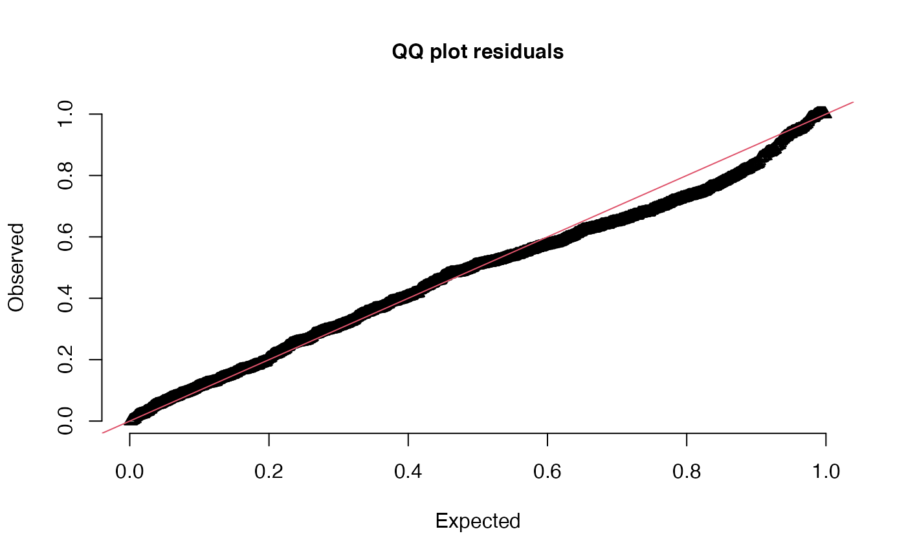

Get DHARMa residuals
dharma_residuals(simulated_response, object, plot = TRUE, ...)Output from simulate.sdmTMB().
Output from sdmTMB().
Logical.
Other arguments to pass to DHARMa::createDHARMa().
A data frame of observed and expected values is invisibly returned,
so you can set plot = FALSE and assign the output to an object if you wish
to plot the residuals yourself. See the examples.
if (inla_installed()) {
fit <- sdmTMB(density ~ as.factor(year) + s(depth, k = 3),
data = pcod_2011, time = "year", mesh = pcod_mesh_2011,
family = tweedie(link = "log"), spatial = "off",
spatiotemporal = "off")
# The `simulated_response` argument is first so the output from
# simulate() can be piped to dharma_residuals():
# simulate(fit, nsim = 500) %>% dharma_residuals(fit)
s <- simulate(fit, nsim = 500)
dharma_residuals(s, fit)
r <- dharma_residuals(s, fit, plot = FALSE)
head(r)
plot(r$expected, r$observed)
abline(a = 0, b = 1)
}
